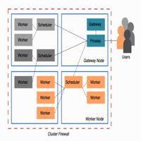

Cloud Storage Benchmarks¶
earthcube2020/ec20_abernathey_etal


Thumbnail Image¶
Description¶
Investigation of the throughput of various cloud storage formats and services. Prepared for the 2020 EarthCube Meeting by Ryan Abernathey.
earthcube2020/ec20_abernathey_etal
Investigation of the throughput of various cloud storage formats and services. Prepared for the 2020 EarthCube Meeting by Ryan Abernathey.